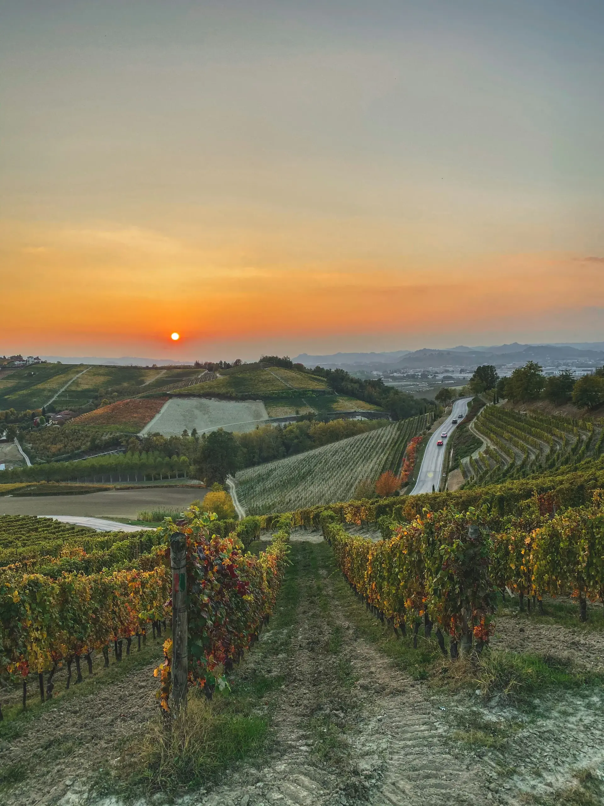

Bar, cave et scène depuis 2013
La cave à vin,
Perpignan.
Deux cents vins, dont huit sur dix du Roussillon, quatre cent cinquante bières et des tireuses à louer pour vos fêtes.
La bouteille
Elle a attendu au frais, à l'abri de la lumière. Ce soir, c'est son tour.
Le service
On l'ouvre au comptoir, devant vous, et on vous raconte d'où elle vient.
Le verre
Si elle vous plaît, vous repartez avec. Au prix de la cave.

Le terroir
Ici, le vin vient
d'à côté.
Entre la mer et le Canigou, les vignes du Roussillon remplissent l'essentiel de la cave.
La cave
Deux cents vins.
Huit sur dix du Roussillon.
Chaque bouteille est goûtée avant d'entrer en rayon. On vous conseille selon le moment, le plat et le budget, des petits prix aux grandes cuvées.
- 200vinsdont 80 % du Roussillon
- 450bièresartisanales et brassées avec soin
- 150spiritueuxwhiskys, rhums, gins, liqueurs
La scène
On sert aussi
de la culture.
Quatre cents mètres carrés, une programmation renouvelée chaque trimestre.
| N° | Rendez-vous | Ce qu'on y trouve | Rythme |
|---|---|---|---|
| 01 | Concerts | Groupes de la région, en acoustique | Chaque mois |
| 02 | Expositions | Artistes locaux, aux murs de la cave | Chaque trimestre |
| 03 | Danse | Cours et soirées dansantes | Chaque semaine |
| 04 | Conférences | Le vin, le territoire, ceux qui le font | Au fil de la saison |
Location de tireuses
Une tireuse
pour votre fête.
Mariage, anniversaire, association. On vous conseille les fûts, on livre et on installe si vous le souhaitez, puis on reprend le matériel.
Tireuse offerte
dès 80 €
le fût de 30 litres
soit 0,67 € le demi de 25 cl
Venir
Il ne manque
plus que vous.
Horaires
Lun. 15 h – 21 h · mar.–sam. 10 h – 12 h 30 et 14 h 30 – 21 h
| Lundi | 15 h – 21 h |
|---|---|
| Mardi – samedi | 10 h – 12 h 30 14 h 30 – 21 h |
| Dimanche | Fermé |